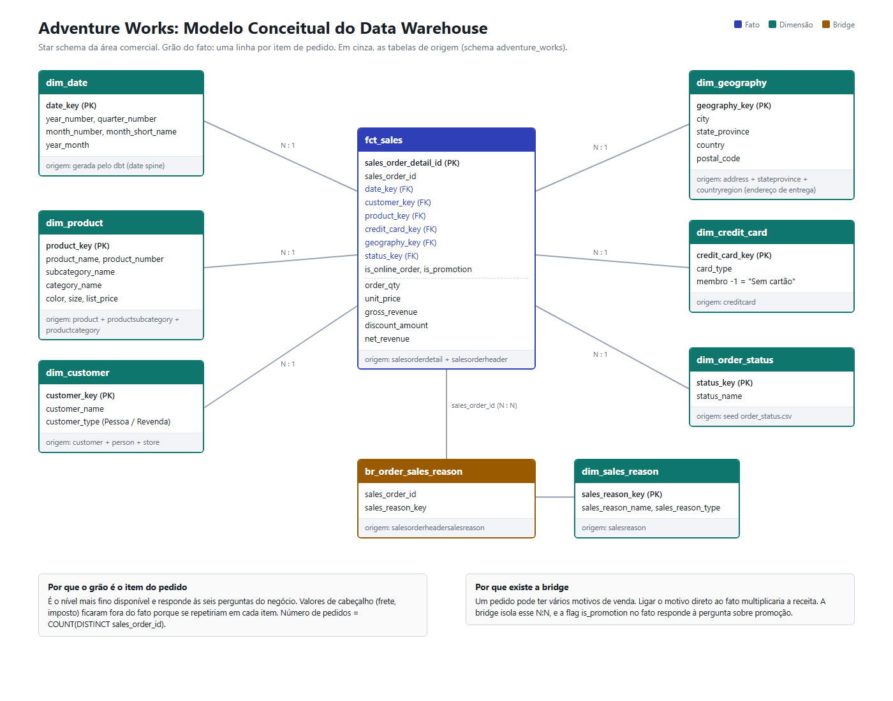
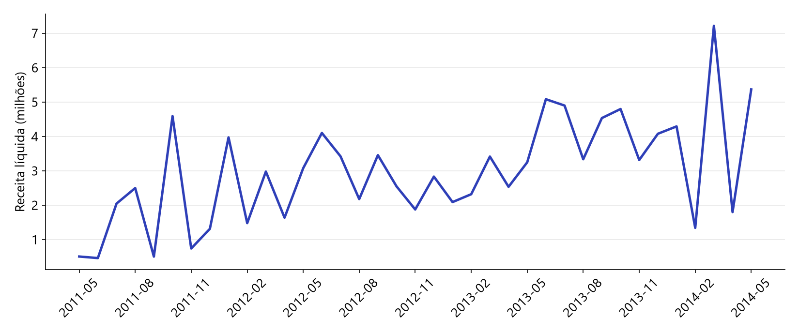
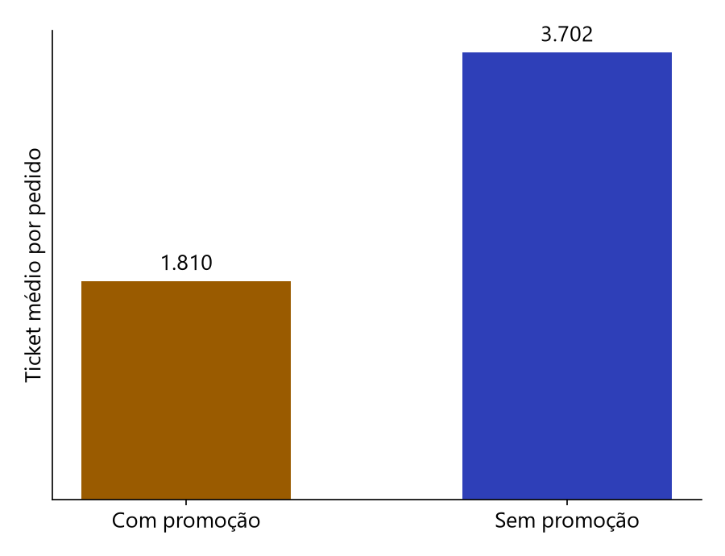
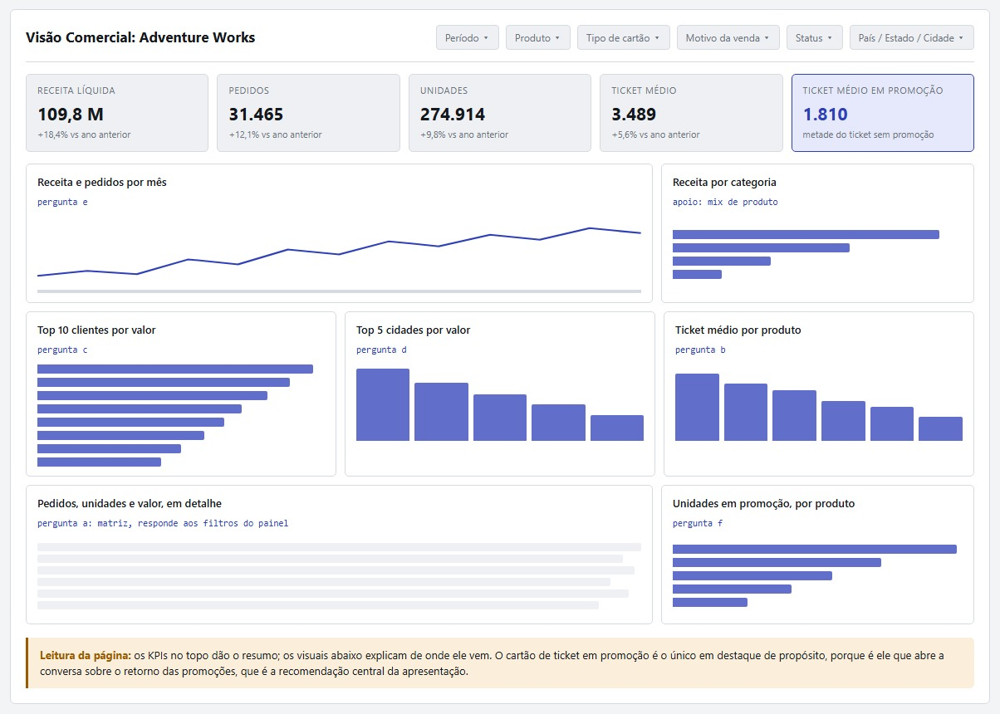

Da base transacional à decisão: uma plataforma de dados para a área comercial.
Manoel Neto
Código versionado no GitHub: github.com/m4cneto/ae_certification_2026

Vendas brutas de 2011 apuradas pelo modelo: exatamente o valor da auditoria contábil citado pelo CEO.
Verificações automáticas no dbt: chaves da origem, chaves primárias, integridade entre tabelas, faixas de valor e o teste de 2011. Todas passando.
| KPI | Por que está no painel |
|---|---|
| Receita líquida | É o número pelo qual a área comercial responde. |
| Pedidos e unidades | Separam crescimento por volume de crescimento por preço. |
| Ticket médio | (Receita bruta − descontos) / pedidos, como pede o enunciado. |
| Receita por canal | Online e revenda são negócios diferentes. |
| Ticket em promoção | Mostra se a promoção traz pedidos de valor. |
| Top 10 clientes, top 5 cidades | Pedidos diretos da diretoria (perguntas c e d). |

Antes de ampliar a verba promocional, vale medir o retorno. Agora existe como medir.


Cultura data-driven começa quando a reunião discute o número, e não de quem é o número certo.